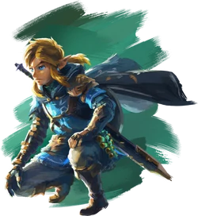

Intro
With its first appearance in 1986, The Legend of Zelda is a media franchise created by the Japanese game designers Shigeru Miyamoto and Takashi Tezuka. It is primarily developed and published by Nintendo, but some portable installments and re-releases have been outsourced to Flagship, Vanpool, Grezzo, and Tantalus Media.
Since The Legend of Zelda was released in 1986, the series has expanded to include 21 entries on all of Nintendo's major game consoles, as well as a number of spin-offs. An American animated TV series based on the games aired in 1989 and manga adaptations commissioned by Nintendo have been produced in Japan since 1997. The Legend of Zelda is one of Nintendo's most successful franchises; several of its entries are considered among the greatest video games of all time.
Gameplay of The Legend of Zelda games feature a mix of puzzles, action-adventure, and exploration. These elements have remained constant throughout the series, with refinements and additions featured in each new game. Later games in the series include stealth gameplay, where the player must avoid enemies while proceeding through a level, as well as racing elements. Although the games can be beaten with a minimal amount of exploration and side quests, the player is frequently rewarded with helpful items or increased abilities for solving puzzles or exploring hidden areas. Some items are consistent and appear many times throughout the series (such as bombs and bomb flowers, which can be used both as weapons and to open blocked or hidden doorways; boomerangs, which can kill or paralyze enemies; keys for locked doors; magic swords, shields, and bows and arrows), while others are unique to a single game.(see more about the items in the Misc section of this page)
Games
Watch a trailer here!
Story
According to the in-game backstories, the world of Hyrule was created by the three golden goddesses: Din, Farore, and Nayru.Before departing, the goddesses left a sacred artifact called the Triforce, which could grant powers to the user.
It physically manifests itself as three golden triangles in which each embodies one of the goddesses' virtues: Power, Courage, and Wisdom. However, because the Triforce has no will of its own and it can not judge between good and evil, it will grant any wish indiscriminately.
Because of this, it was placed within an alternate world called the "Sacred Realm" or the "Golden Land" until one worthy of its power and has balanced virtues of Power, Wisdom, and Courage in their heart could obtain it, in its entirety. If a person is not of a balanced heart, the triforce part that the user mostly believes in will stay with that person and the remainder will seek out others.
In order to master and control the triforce as a whole, the user must get the other parts found in other individuals and bring them together to reunite them. The Sacred Realm can itself be affected by the heart of those who enter it: those who are pure will make it a paradise, while those who are evil will transform it into a dark realm.
GANONDORF, the incarnation of the god of chaos Demise, holds the triforce of power

ZELDA, the incarnation of the goddess Hylia, holds the triforce of wisdom

LINK, a courageous boy, chosen by the triforce of courage

The timeline begins with the creation of the triforce, each piece being given to a person.
The triforce of power remains with Demise, the god of chaos, who gets reincarnated multiple times along the series. The triforce of wisdom gets passed down the royal family, being inherited by a princess with the name Zelda each time. The triforce of courage is the only one that chooses a different person every time, reincarnating again and again inside someone deemed worthy of fighting Demise's armies.
During the events of Ocarina of Time, Zelda sends Link back in time, which creates a tear in the timeline and splits in three: The downfall timeline, The young hero timeline, and The missing hero timeline.
Later in the timeline, through an event happening in a non-canon game called "Hyrule Warriors", the goddess of fate falls in love with link, which makes her easily manipulated by ganon, an incarnation of demise which is trying to get all his soul pieces back, this soul being split into three when the timeline diverged.
Music
The Legend of Zelda-Main theme
The Adventure of Link-Palace theme
A Link to the Past-Kakariko village
Link's Awakening-Ballad of the wind fish
Ocarina of Time-Zelda's lullaby
Ocarina of Time-Fairy fountain

Ocarina of Time-Windmill hut
Ocarina of Time-Temple of time
Ocarina of Time-Gerudo valley
Majora's Mask-Title theme
Majora's Mask-Song of healing
Majora's Mask-Stone tower temple
Wind Waker-Dragon Roost Island
Twilight Princess-Hyrule field theme

Twilight Princess-Midna's lament
Skyward Sword-Ballad of the goddess
A Link Between Worlds-Lorule castle
Breath of the Wild-Main theme
Breath of the Wild-Hyrule castle interior
Tears of the Kingdom-Colgera's theme
Check this video out!